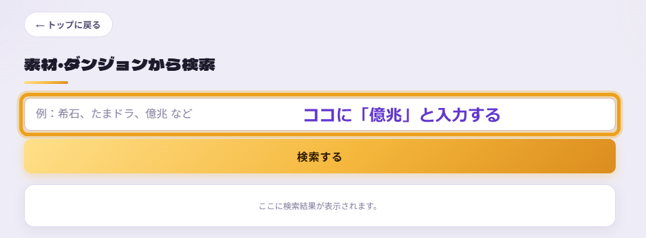
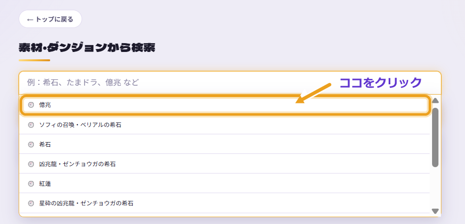
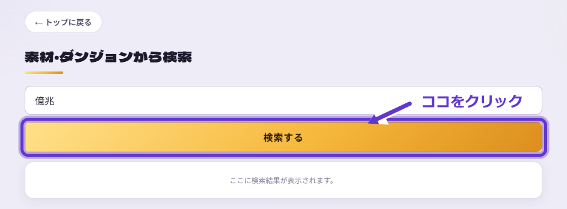
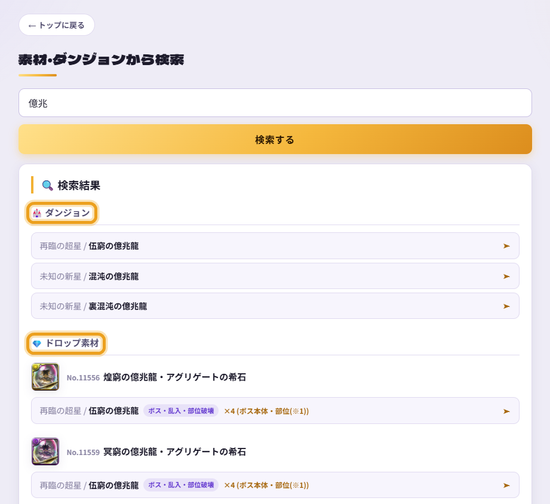
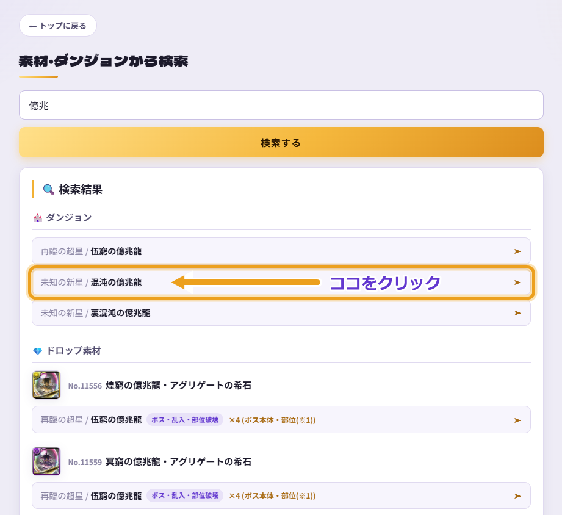

🛠 ただいまメンテナンス中です
【メンテナンス予定期間】
未定
【メンテナンス予定期間】
未定
ARENA REWARD & SEARCH
利用したい機能を選んでください
過去の検索履歴を個別に削除したり、すべてリセットすることができます。
ツールの外観（テーマカラー）を切り替えることができます。
トップ画面の「素材・ダンジョン検索」から、探したいアイテム名やダンジョン名を入力して検索できます。
例として、ダンジョン「未知の新星/混沌の億兆龍」を「億兆」というワードで検索する。
検索ボックスに「億兆」と入力する。

入力の際、検索履歴から楽に入力を済ませれます。

入力を終えたら、検索ボタンを押す。Enter(改行)でも検索できます。

「🏰 ダンジョン」には、「混沌の億兆龍」や「裏混沌の億兆龍」など3種類のダンジョンが表示されています。
一方、「💎 ドロップ素材」には、「煌窮の億兆龍・アグリゲート」などの素材が表示されます。

「未知の新星 / 混沌の億兆龍」の行をクリックすると、該当ダンジョンの報酬リストに飛ぶことができます。

トップ画面の「報酬リスト」から、すべての闘技場シリーズのドロップ報酬を一覧で確認できます。
この報酬一覧は、私自身でSNSや自分のスクショを基に作成しています。見落としも含めて、必ず正しいとは言えません。あくまでも目安として受け取っておいてください。
各ダンジョンを初クリアすると、MP50,000ptを獲得できる。また、1つの闘技場シリーズを初踏破するたびに魔法石25+1個を獲得できる(∞級1人専用コロシアムと極限降臨ラッシュを除く)
大樹の霊王を例とすると、
①ボス・部位破壊
ボス本体では、『宿木の大樹霊王・アドネアの希石』、ボス部位では『宿木の大樹霊王・アドネアの左根の希石』と『宿木の大樹霊王・アドネアの右根の希石』、乱入部位では『神器に宿る者・グラオルの希石』をドロップする。
②確定ドロップ
『潜在たまドラ☆枠解放』を "確定で" 1体ドロップする。
③確率ドロップ
『ゴールドたまドラ』を "一定確率で" 1体ドロップする。
④ランダムドロップ
『創装の宝玉』、『ダイヤドラゴンフルーツ』、『古代の三神面』の中からランダムで8個 "確定で" ドロップする
ここに検索結果が表示されます。
保存ボタンを押すと、GitHub の設定ファイルを直接書き換えます。そのための「アクセストークン」を、このブラウザに1回だけ登録してください。
状態：
github_pat_… をコピーして上の欄に貼り付け、「登録」を押すトークンはこのブラウザの中にだけ保存されます。別のパソコンやスマホで使う時は、そこでも登録してください。他人と共用のパソコンでは登録しないでください。漏れたかもしれない時は、GitHub の同じ画面からトークンを削除すれば無効になります。
期間中は、一般の人にはメンテナンス画面が表示されます（?admin=… 付きで開けば、メンテ中でもサイトを確認できます）。
編集した dangeon.xlsx を選ぶと、中身をチェックしてまとめを表示します。「保存」を押すと、Excel と、サイトが読む軽いデータ（data.json）をまとめて GitHub に保存します。
背景にしたい画像（元の大きい画像のままでOK）を選ぶと、このブラウザの中で軽量化（横1280px・400KB以内）してから保存します。複数枚まとめて選べます。ファイル名がそのまま名前になるので、Excel の「背景モンスター」列にはその名前（例：13585_1）を書いてください。
ダンジョンを選び、下の画像で「見せたい場所（顔など）」をクリックしてください。その場所がカードの真ん中あたりに来るように切り抜きます（画像の端に近い場所は、はみ出さない範囲で寄せます）。拡大率も変えられます。
見せたい場所：